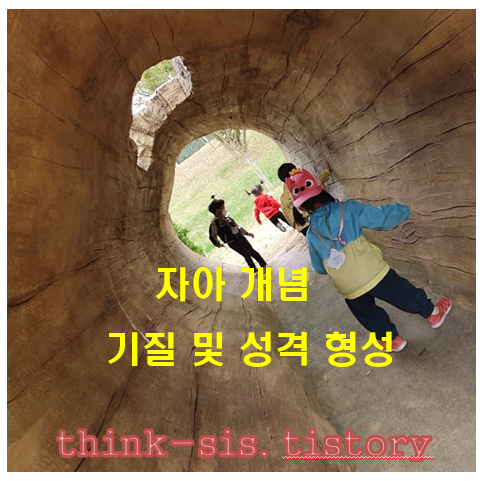

자아 개념
자아 개념(自我槪念)또는 자기 개념(Self-concept)은 소유(possession)로 사회적 태도, 능력, 느낌에 대한 주관적인 인식이다. 아이가 말을 하기 시작하면서 자신에 대해 말로 표현함으로써 보다 분명하고 정교한 자아를 갖게 되는데 스턴(Stern, 1985)은 이러한 자아를 언어적 자아(verbal self)라고 하였다.

1개월 경에는 자신의 신체가 아직 자기 것이라고 깨닫지 못한다. 발달이 느린 아기는 8개월 경에도 자신의 신체와 다른 사람의 신체를 구분하는 것이 정확하지 못하는 경우가 있다.
일반적으로 츨생 후 1년이 되면 자신과 타인을 분명하게 구분할 줄 알고, 자신이 원하는 장난감을 빼앗기 위해 다른 아이를 때리기도 한다. 20~22개월 정도가 되면 아이는 자신의 물건에 대한 소유 개념이 생기기 시작한다. 24개월경이 되면 자신에 대한 자부심이 더욱 활발해지고 칭찬받으려고 자기의 모습이나 행동 등 묘사하는 말을 사용한다.
이러한 자아는 아이들에게 자부심， 수치심， 죄책감， 애정， 만족， 질투， 감정이입， 고통， 부러움, 당황 등 2차정서 발달을 촉진시킨다. 아이는 자기 개념에 대한 인식을 하기 위하여 자신과 타인에 대해 인식한다. 이러한 자아 개념은 성장하면서 다른 사람과의 상호작용 방법이나 능력에 영향을 미치는 사회 · 정서발달에 있어서 중요한 측면으로 반영된다.
자아와 사회성발달
아이의 자아발달은 사회성 발달의 기초를 형성한다. 사회성은 인간과 사물, 동물을 구분하면서 다르게 반응할 수 있다. 아이들의 사회적 행동(social behavior)은 자신과 주변의 다른 사람과의 관계 형성을 위한 울기, 미소 짓기, 메달리기, 모방하기 등으로 나타낸다. 아이의 이러한 행동은 자신과 타인을 구별하고 자신의 욕구나 의사를 전달하기 위한 기초를 이룬다.
사회성 발달 과정
1) 3개월
아이는 누워 있는 시기에 소리가 나는 방향으로 고개를 돌린다. 주변에 사람이 있으면 사회적 미소를 짓거나 울음으로 나타낼 수 있다. 자신의 옆에서 누가 말을 걸거나 물건으로 소리를 내면 고개를 돌리고 관심을 둔다. 낯선 사람을 새롭게 접하면 울거나 머리를 돌려버린다.
2) 4-6개월
아이는 선택적 사회적 미소를 보이기 시작한다. 주변사람의 반응과 관심을 유도하며 사회적 교류의 기초가 된다. 6개월 경에는 자신과 비슷한 또래에게 관심을 갖고 쳐다보기, 손내밀기, 만지기 등 접촉을 이룬다. 자기에게 주의를 기울이면 기뻐하고 함께 놀아주면 손으로 만지고 옹알이를 한다.
이 시기는 주 양육자에게 강한 애착을 나타내며 친근한 사람과 낯선사람을 구별하고 다르게 반응한다. 특히 애착 대상자에게 반응을 유도하기 위하여 손과 발을 자발적으로 사용하며 적극적인 접촉 행동으로 손과 발을 움직이면서 따라하기, 기어가기, 접근하기, 매달리기 같은 신호로 낯을 가리기 시작한다.
3) 8-12개월
아이는 말하는 소리와 단순한 행동 및 몸짓에 대한 모방을 제법 잘한다. 아이는 주 양육자를 쳐다보기, 말하기 등 자기 방식대로 상호작용을 적극적으로 사용하려는 사회적 존재로 발달하게 된다. 주 양육자가 나타내는 소리나 동작을 모방하며 부모 외의 타인과의 상호작용도 증가한다.
아이는 또래의 머리카락이나 옷을 잡아당기면서 관심을 보이고 단순한 사회적 놀이를 시작한다. 이 시기의 상호작용은 성인과의 상호작용을 자주 나타내고, 주 양육자가 아이의 요구에 일관성있고 친숙하게 민감하게 반응을 해줄 때 안정감을 형성한다. 즉 애착에 대해 신뢰감을 발달시켜 갈 수 있으므로 주 양육자의 역할이 매우 중요하다.
4) 13-18개월
아이는 자기중심적 관점에서 세상을 이해하며 대상영속성 개념이 발달하여 자신과 타인, 사물을 구별할 수 있다. 낯선 사람이 접근해 오면 밀치거나 울어버린다. 자신의 싫어하는 감정을 적극적으로 표현한다. 아이는 사회적 관계망이 주 양육자에게서 다른 가족원이나 또래로 확장됨에 따라 자아개념도 더욱 발달한다.
아이는 자기 주변의 다른 아이의 웃음이나 울음을 모방한다.
놀이는 주로 혼자 말하고, 놀 수 있지만 상호작용은 이루어지지 않는 혼자놀이 또는 병행놀이를 한다.
5) 19-24개월
아이는 옷입기, 목욕하기 같은 단순한 활동을 주 양육자 외 주변의 성인들과 함께 할 수 있다. 장난감은 사회적 관계를 맺는 수단으로 이용한다. 친구와 놀기 위해 자신의 행동을 수정하기도 한다.
-아이의 자아 개념은 계속 발달시키면서 또래 및 타인과의 관계를 확장시켜 간다.
-타인의 감정을 인식하여 웃거나 편안해 하며 우는 반응을 보이고 타인이 행동을 모방하려고 한다.
-다른 영아들과 함께 놀기는 하나 상호작용은 별로 없다.
-놀잇감이나 물건을 다른 아이들과 협동하면서 놀기는 어렵다.
이와 같이 아이의 사회적 행동의 발달은 부모, 그 중에서도 주 양육자로부터 따뜻함, 편안함 등 여러 가지 감각적인 자극을 추구한다. 아이의 사회적 행동을 위한 사회성(sociality)은 다른 사람과 사귀거나 집단생활을 좋아하거나 잘해 나가는 능력을 이루어간다.
이러한 사회성 발달은 아이의 타고난 기질과 주 양육자와의 애착관계 형성의 조화에 따라 행동 및 성격으로 발달한다. 생의 초기에 형성된 아이의 사회적 행동은 아동기 이후 성인기까지 사회적 관계 및 행동에 근간이 되는 중요한 수단이 된다.
2022.02.06 - [분류 전체보기] - 분리 불안과 불안 심리의 차이 - 낯가림, 애착, 두려움과 공포
분리 불안과 불안 심리의 차이 - 낯가림, 애착, 두려움과 공포
분리불안과 불안의 의미 분리불안(separation anxiety)이란 발달과정과 일상생활의 적응 정도에 따라 아이들에게 흔히 나타나는 증세이다. 최초 어머니상(primary mother-figure)의 상실감에 따른 공포증은
think-sis.tistory.com